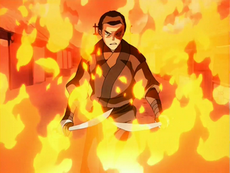

Sobre
Zuko é um personagem de "Avatar: The Last Airbender", é o meu personagem preferido pois ele teve um arco de redenção muito elaborado e a seu passado foi atribulado. Ele tem um grande papel no desenvolver da série pois no inicío ele é o principal antagonista e no fim um dos protagonistas que ajuda no bem.
Zuko rodeado de chamas
Inimigos de Zuko:
- O próprio pai (Ozai);
- Zhao;
- Avatar (até mudar de ideias).